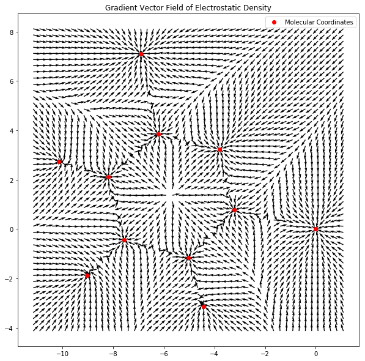
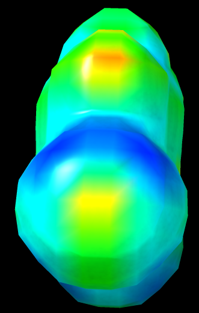
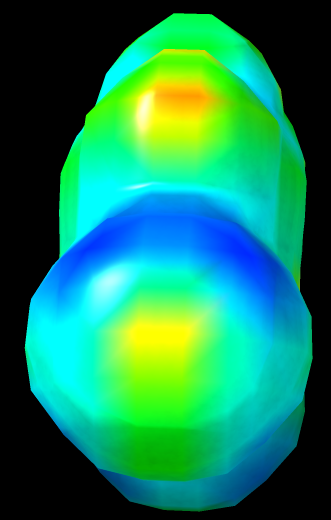

rainbowNathan Wood, Year 4 Undergraduate, Microbiology and Cell Science, University of Florida
This project was prepared under the advisory of Dr. Farnaz Heidar-Zadeh, Dr. Paul Ayers, and Dr. Esteban Vohringer-Martinez
With additional assistance from Gabriella Sánchez-Dìaz and Ali Tehrani
All work pertaining to objectives has been linked within the Results section.
For ease of access, links can also be found below:
Python Function of ChimeraX Isosurface Visualization
Jupyter Notebook of 3D Annotation
Python Script of 3D Annotation
Jupyter Notebook of 2D Annotation
Python Script of 2D Annotation
Jupyter Notebook of Both Vector and Scalar Qualities
OpenChem wishes to implement a means of visualizing Chemtools data. Such means include exploring viable alternatives to Visualizing Molecular Dynamics as a visualization platfrom. Further visualization goals include the plotting of gradient vector fields and annotation of molecules. Additionally, ChimeraX, developed by the University of California, San Francisco, was chosen as a general purpose alternative for VMD, with regards to visualizing isosurfaces as well as molecular annotations.
We wish to examine alternatives to Visualizing Molecular Dynamics (VMD) to visualize isosurfaces of molecules computed by Chemtools. Examples of VMD Alternatives include Avogadro/Avogadro2, ChimeraX, IQMol, JMol/JSMol, and PyMOL.
We wish to devise a means of taking IOData output, such as electrostatic potential charges, and applying these values as text annotations in a molecule rendered in a three dimensional environment.
We wish to implement a means of not only visualizing a given molecule originating from a Gaussian Checkpoint file (fchk), but also annotating a 2-dimensional representation of this molecule using data from IOData.
We wish to develop a means of visualizing the computation of both scalar and vector qualities of molecules.
We wish to implement a means of visualizing the bond and ring critical points of a given molecule.
Python/ChimeraX Script to Visualize Isosurfaces
A script, consolidated as function print_chimerax_isosurfaces, has been written, and accomplishes the following actions within the ChimeraX Environment:
*_rho.cube*_esp.cubescalemin and maximum scalemax value range for colorizng the surfaces, or allow ChimeraX to determine the most suitable range using the string 'compute' for both the scalemin and scalemax parameters within the script
rainbowJupyter Notebook of 3D Annotation
Python Script of 3D Annotation
IOData can output to Protein Data Bank (PDB) files, a text file that enumerates monomer and a atomic data, such as element, XYZ cartesian coordinates, and B Factor, which has historically been used to quantify flexibility and freedom of motion in computational protein-ligand docking. Originally, ChimeraX’s Attribute Files, which allow a tab separated table enumerating characteristics per unit, was conceived as a means of annotating molecules as it was not considered to be a "hack" and could allow multiple different annotations could be performed without overwriting our PDB. However, this was abandoned due to the complexity of assigning IOData values to an format ChimeraX finds accessible.
IOData possesses a feature known as extra, which allows writing in B Factors when an intermediate PDB file is opened using IOData function load_one, which can then be written to a finalized PDB file to be loaded into ChimeraX. Once loaded, ChimeraX can visualize the B Factor using its labeling utilities.
Jupyter Notebook of 2D Annotation
Python Script of 2D Annotation
IOData is used to dump an XYZ and PDB files from the original Gaussian Checkpoint (fchk) file. XYZ files are capable of being converted to accurate SMILES strings via the Chemml utilities, however, the order of the atoms being enumerated differs from that of IOData, making it non-trivial to assign charges resulting from IOData’s atcharges call. On the other hand, PDB Files maintain the atomic order as IOData, however, RDKit cannot visualize any pi bonds from the PDB. This is due to the fact that PDB Files store pi bond data based on the distance between atoms in cartesian space, whereas RDKit prefers bonds to be explicitly detailed.
To address both issues, we can first correct the geometry of the PDB by using RDKit’s Compute2DCoords and then force the PDB to assume the visualization stile of the afforementioned SMILES string using AssignBondOrdersFromTemplate. Afterwards, the charges from IOData can be assigned iteratively.
Jupyter Notebook of Both Vector and Scalar Qualities
A Jupyter Notebook and function plotVectorFieldOverPlane were made that is capable of plotting gradient vector fields. This was performed by:
vectorFunc as as the vector quality we want to explore, in this case mol.compute_gradient()
To plot a scalar quality, in this case electron density, we want to
scalarFunc which is a scalar quality of a molecule, in this case, electrostatic densityscalarFunc representing the level curves
While debug and deprecated code has been removed, parameters for functions need to be explicitly detailed.
There is a discrepancy between appropriate values to display isosurface levels between both ChimeraX and VMD. For the example 2,6-dichloropyridine, the previous VMD example recommends setting isoSurf to .003 (left), however, in ChimeraX, this will produce a noticeable uncolored void that can be corrected when setting isoSurf to .005 (right).
 

isoSurf value .003(left) yields an faulty visualization, isoSurf value .005 corrects thisThe original goal of visualizing molecular graphs detailing the critical points of bonds and ring structures was not fulfilled.
In order to improve interoperability with Avogadro2, it will be necessary to be able to output IOData and Chemtools data into a "Chemical JSON" a form of JSON file that outlines chemical information such as bonds, atoms, as well as charge and molecular/atomic orbital data. While the formatting of basic data such as bonds and atoms is nontrivial, considerable work will have to be done to correctly format quantum chemistry data.
Much like VMD and PyMOL, ChimeraX is a versatile visualization tool for chemical output files, and its future use within Chemtools should be explored.
Furthermore, Avogadro2 is a OpenChem project in development that also offers visualization capabilities that are worthy of further exploration
There remains the need to implement a means to visualize bond and ring critical points.
I would like to extend great thanks to the following individuals for assisting and granting me flexibility: